|
|
|
|
|
Красно -черное дерево, как модель 2-3-4 дерева Рекурсивный алгоритм вставки элемента в RB – дерево Структурные свойства красно-черного дерева Итеративный алгоритм включения в RB - дерево Итеративный алгоритм удаления из красно-черного дерева
Красно -черное дерево, как модель 2-3-4 дереваКрасно -черное дерево (RB - дерево) можно считать 2-3-4 – деревом, но 3 - и 4 - узлы в нем представлены абстрактно, с помощью эквивалентных групп 2 - узлов [4]. 2 узел 2-3-4 - дерева остается 2 - узлом и в RB - дереве. 3-узел можно представить в виде пары узлов, ориентированной влево или вправо. Ориентация пары определяется динамикой алгоритма. 4 - узел можно представить в виде группы из трех 2-узлов. 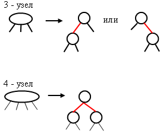 Чтобы выделить группу в качестве 3 - или 4-узла в дереве, связи внутри группы помечаются цветом, например, красным. Остальные связи, объединяющие отдельные 2 -, 3 - и 4 - узлы, обозначаются как черные связи. Окрашивание связей эквивалентно окрашиванию узлов, на которые они указывают, то есть окрашиваются узлы, а не связи. 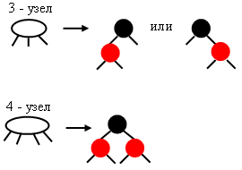 Пример 2-3-4 – дерева и эквивалентного ему RB – дерева выглядит следующим образом: 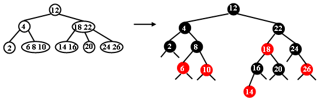 В RB – дереве алгоритм поиска соответствует стандартному алгоритму поиска в BST – дереве и поэтому работает более быстро, чем в 2-3-4 – дереве и быстрее, чем в BST – дереве. Алгоритм вставки должен соответствовать алгоритму вставки в 2-3-4 – дерево, но выполняется на эквивалентной структуре RB – дерева. При этом дополнительные затраты на балансировку встречаются только тогда, когда новый элемент подключается к 4 - узлу. Поскольку число 4 - узлов невелико, то и затраты на балансировку невелики. Рассмотрим преобразования в RB – дереве, эквивалентные вставке в 2-3-4 – дерево. Новый элемент, то есть новый узел, как и в BST – дереве подключается в качестве листа к внешнему узлу. При этом связь, подключающая новый узел к дереву всегда красная, так как в результате подключения образуется как минимум 3 - узел, то есть узел нового элемента всегда красный. 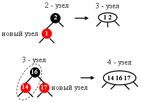 Подключение к 4 - узлу должно вызвать разделение 4 - узла на два 2 - узла. Как упоминалось выше, можно использовать схему нисходящего и восходящего разделения 4 - узлов и схема нисходящего разделения имеет свои преимущества. Поэтому рассмотрим вначале схему нисходящего разделения 4 - узла, лежащего на пути поиска при вставке нового элемента. Случай а): в 2-3-4 – дереве: в RB – дереве:
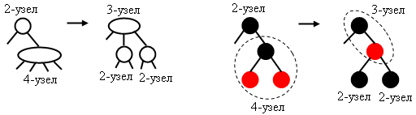
Случай в): в 2-3-4 – дереве в RB – дереве
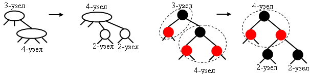
Случай с): в 2-3-4 – дереве в RB – дереве
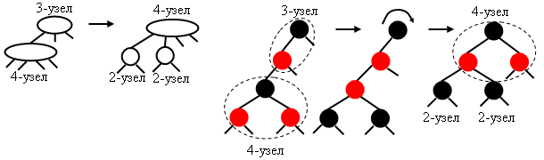
Случай d): в 2-3-4 – дереве в RB – дереве
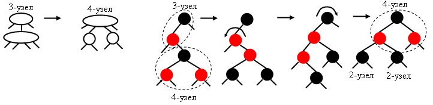
Два последних случая (с и d) отличительны тем, что 4 - узел подключен к красному узлу 3 - узла. Разделение 4 - узла приводит к образованию двух 2 - узлов и на более высоком уровне – к образованию структуры 3 - узла. В дереве образуются две последовательные красные связи, что не может быть RB –деревом. Можно преобразовать такое неправильное дерево так, чтобы эти две связи вели из одного узла, что соответствует 4 -узлу, путем вращений. Если две последовательные красные связи ориентированы одинаково (случай с), то выполняется вращение корня неправильного поддерева и изменяется цвет узлов. Если две красные связи ориентированы по-разному (случай d), то сначала путем вращения верхнего красного узла связи приводятся к одинаковой ориентации, а затем выполняется вращение, аналогичное случаю с. Для реализации RB-дерева в структуру узла вводится дополнительный параметр – цвет color, который может быть равен значению RED (красный) или BLACK (черный).
Рекурсивный алгоритм вставки элемента в RB – деревоRB_Insert(root, k, data)
1.
2.
3.
4. root ← RB_Insert1(root, k, data, 0, ins) 5. color [root] ← BLACK 6. return ins
RB_Insert1(t, k, data, s, inserted)
1.
2.
3.
4.
5.
6. if t = nil 7. then t ← Create_RB_Node(k, data) 8. color[t] ← RED 9. inserted ← TRUE 10. return t 11. if k = key[t] 12. then inserted ← FALSE 13. return t 14. if color[left[t]] = RED and color[right[t]] = RED 15. then color[t] ← RED 16. color[left[t]] ← color[right[t]] ← BLACK 17. if k < key[t] 18. then left[t] ← RB_Insert1(left[t], k, data,0, ins) 19. if color[t] = RED and color[left[t]] = RED and s = 1 20. then t ← R(t) 21. if color [left[t]] = RED and color [left[left[t]]] = RED 22. then t ← R(t) 23. color[t] ← BLACK 24. color[right[t]] ← RED 25. else right[t] ← RB_Insert1(right[t], k, data,1, ins) 26. if color[t] = RED and color[right[t]] = RED and s = 0 27. then t ← L(t) 28. if color[right[t]] = RED and color[right[right[t]]] = RED 29. then t ← L(t) 30. color[t] ← BLACK 31. color[left[t]] ← RED 32. inserted ← ins 33. return t
Алгоритм вставки в красно-черное дерево гарантирует логарифмическую трудоемкость для поисков и включений. В худшем случае, когда путь поиска состоит из чередующихся 3 - и 4 - узлов, требуется 2 log2 n+2 шагов. Анализ и моделирование RB-деревьев с n узлами, построенных из случайных ключей, показали, что эффективность имеет оценку 1.002 log2n. В этом смысле RB-деревья оптимальны для практического применения и часто включаются в библиотеки. Структурные свойства красно-черного дереваПри реализации алгоритма часто используется альтернативный подход при рассмотрении RB-дерева, как дерева с определенными структурными свойствами [3]. При этом игнорируется соответствие с 2-3-4- деревом. RB-дерево, как структура обладает следующими RB - свойствами:
Вставка и удаление из RB-дерева могут нарушать Вставка и удаление из RB-дерева могут нарушать третье и четвертое свойства дерева соответственно. В этом случае используется балансировка, заключающаяся в восстановлении RB-свойств на пути поиска узла. Восстановление сводится к восходящим перекраске и вращениям узлов. Рассмотрим реализацию алгоритмов вставки и удаления узлов в итеративном варианте. Операции модифицируются таким образом, чтобы реализовать добавление и удаление узлов за O(log2 n) времени с сохранением RB-свойств. Делается это за счет перекраски и левых и правых однократных поворотов узлов с сохранением упорядоченности поддеревьев.
Итеративный алгоритм включения в RB - дерево. Сначала выполняется обычная операция включения в двоичное дерево BST_Insert и новая вершина помечается красным цветом. После этого восстанавливаются RB-свойства, если они нарушены путем восходящих перекраски вершин и вращений. Рассмотрим случаи нарушения RB-свойств на примере включения в дерево: 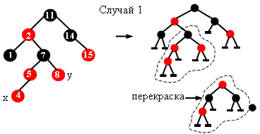
При включении х нарушено третье RB-свойство для вершины 5 (оба сына должны быть черные). Т.е. RB-свойство нарушается, если родитель нового узла красный. Как можно восстановить его? Случай 1: если родитель красный, то родитель родителя – черный (в силу RB-свойства 2). Если у деда (7) второй сын – у ( дядя нового узла х) тоже красный, то можно перекрасить указанных предков: сделать деда красным, а родителя и дядю – черными. Это не изменит черную высоту дерева и восстановит третье свойство для родителя(5). После перекраски: 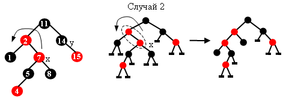
То есть, теперь 5 – черная вершина, которая может иметь и красного и черного сына. Но появился новый красный узел х (7). Теперь нарушено третье RB-свойство родителя - узла 2, так как. этот узел тоже красный. К сожалению дядя (14) не красный и перекраску делать нельзя, не нарушив черной высоты. Тогда используем L – поворот родителя х – узла 2. 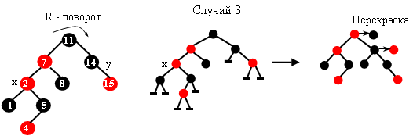
Исправлено нарушение 3-го свойства для узла 2, но нарушено для узла 7. Случай 3 отличается от случая 2 тем, что х является левым, а не правым сыном своего родителя. В этом случае делаем правый поворот родителя (11). 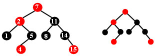
Красную вершину 7, оказавшуюся в корне, окрашиваем в черную, а вершины 2 и 11 – в красные. Это не нарушит четвертое RB-свойство. Итеративный алгоритм включения в RB - деревоIt_RB_Insert(root, k, data)
1.
2.
3.
4.
5. if root = tnil 6. then root ← Create_RB_Node(k, data) 7. color[root] ← BLACK 8. return TRUE 9. t ← root 10. while t ≠ tnil 11. do 12. pred ← t 13. if k = key[t] 14. then return FALSE 15. if k < key[t] 16. then t ← left[t] 17. else t ← right[t] 18. if k < key[pred] 19. then t ← left[pred] ← Create_RB_Node(k, data) 20. else t ← right[pred] ← Create_RB_Node(k,data) 21. color[t] ← RED 22. while t ≠ root and color[p[t]] = RED 23. do if p[t] = left[p[p[t]]] 24. then y ← right[p[p[t]]]
25.
if color[y]=RED
26. then color[p[t]] ← color[y] ← BLACK 27. color[p[p[t]]] ← RED 28. t ← p[p[t]]
29.
else if
t = right[p[t]] 30. then t ← p[t] 31. It_L(root, t)
32.
color[p[t]]
← BLACK 33. color[p[p[t]]] ← RED 34. It_R(root, p[p[t]])
35.
else
36.
37. color[root] ← BLACK 38. return TRUE Операция левого поворота узла t: It_L (root, t) 1. x ← right[t] 2. right[t] ← left[x] 3. if left[x] ≠ tnil 4. then p[left[x]] ← t 5. p[x] ← p[t] 6. if p[t] = tnil 7. then root ← x 8. else if t = left[p[t]] 9. then left[p[t]] ← x 10. else right[p[t]] ← x 11. left[x] ← t 12. p[t] ← x
При включении, если встречается случай 3, выполняется не более одного вращения, и в случае 2 – не более двух вращений. Демонстрация работы алгоритма вставки и тренажер
Инструкция к демонстрации и тренажеру Итеративный алгоритм удаления из красно – черного дереваУдаление из RB-дерева также требует O(log2 n) времени. Удаление вершины несколько сложнее добавления. Для упрощения удаления в дереве используется вместо значения nil фиктивные элементы tnil. Более того, физически в дереве присутствует один фиктивный узел, на который ссылаются все листья дерева и узлы, имеющие одного сына. Фиктивный элемент имеет те же поля, что и другие узлы, тo есть, ссылку на родителя - p[t], ссылки на левого и правого сына - left[t], right[t], ключ и данные key[t] и data[t] и цвет - color[t], причем в алгоритмах играют роль только поля p[tnil] и color[tnil]. Цвет фиктивного элемента всегда черный. Благодаря фиктивному элементу все узлы внутренние. Операция RB_Delete работает так же, как и BST_Delete. Но вырезав вершину, она вызывает вспомогательную операцию RB_FixUp, которая перекрашивает узлы или производит вращения для восстановления RB-свойств после удаления узла. Эта операция используется, если вырезан черный узел.
It_RB_Delete(root, k)
1.
2.
3. t ← root
4.
while
t ≠
tnil
and
k ≠
key[t]
5. do if k < key[t] 6. then t ← left[t] 7. else t ← right[t] 8. if t = tnil 9. then return FALSE 10. if left[t]= tnil or right[t] = tnil
11.
then
x ←
t
12. else x ← BST_Successor(root, t) 13. if left[x] ≠ tnil
14.
then y ← left[x]
15. else y ← right[x] 16. p[y] ← p[x]
17.
if
p[x]=tnil 18. then root ← y 19. else if x =left[p[x]] 20. then left[p[x]] ← y 21. else right[p[x]] ← y
22.
if
x ≠
t
23. then key[t] ← key[x] 24. data[t] ← data[x] 25. if color[x]=BLACK 26. then RB_Fixup(root, y) 27. Delete_Node(x) 28. return TRUE
При удалении черного узла возможны две ситуации:
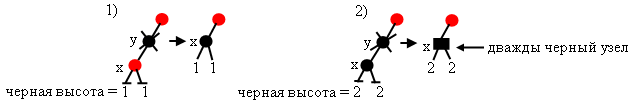
В первом случае нарушение можно компенсировать, перекрасив узел х в черный цвет. Это позволит ликвидировать и нарушение третьего свойства, если родитель вырезанного узла у – красный. Во втором случае применяется перестройка в корне поддерева, где возникло нарушение четвертого свойства. Причем узел х считается дважды черным, способным поделиться своей чернотой с вышележащими на пути к нему узлами. Нужно перестроить вышележащие узлы таким образом, чтобы избавиться от дважды черного узла, не нарушив RB-свойств дерева. Если х – корень, тогда лишняя чернота просто удаляется из дерева. Иначе выполняется восходящая перестройка корней поддеревьев, лежащих на пути к х, путем перекрашивания и вращений влево или вправо. Перестройка учитывает 4четыре возможных случая, которые могут встретиться на пути. Рассмотрим эти случаи: 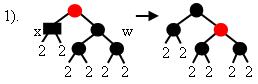
Это наиболее благоприятный случай. Можно перекрасить родителя х в черный цвет, х сделать обычным черным узлом, а w – красным. На этом перестройка заканчивается. Если родитель х – черный, то он становится дважды черным и перестройка поднимается в верхнее поддерево. 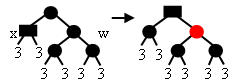
Если новый х – корень дерева, то лишняя чернота просто удаляется из дерева.
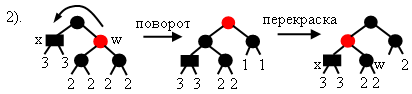
Этот случай можно свести к первому, чтобы братом х стал черный узел. Для этого сделаем левый поворот родителя узла х. Теперь разберемся со случаями, отличными от случая 1, то есть, когда сыновья брата w разного цвета: Перекрасив родителя х в черный цвет, а w – в красный, мы нарушим свойство 3 для w. Поэтому сделаем сначала правый поворот узла w.
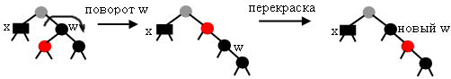
Для случая 4 важно, что правый сын узла w – красный. Перекрашивать нельзя. Левый сын может быть и красным и черным. Опять же действие по схеме случая 1 не годится, т.к. это приведет к нарушению свойства 3. Тогда произведем вращение влево родителя х. Узел х отдает свою черноту родителю, а правый сын узла w перекрашивается в черный цвет. Узел w берет цвет корня поддерева до поворота.
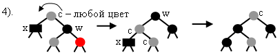
В этом случае происходит полное поглощение излишней черноты и на этом перестройка в RB - дереве прекращается. Итак, рассмотрев действия в различных случаях, подробно рассмотрим только операцию восстановления четвертого RB- свойства. RB_Fixup(root, y)
1.
2.
3. while y ≠ root and color[y] = BLACK 4. do if y = left[p[y]] 5. then w ← right[p[y]]
6. if color[w] = RED
7. then color[w] ← BLACK 8. color[p[y]] ← RED 9. It_L(root, p[y]) 10. w ← right[p[y]]
11.
if color[left[w]] =BLACK and
color[right[w]]=BLACK 12. then color[w] ← RED 13. y ← p[y]
14.
else if color[left[w]] =
RED
15. then color[left[w]] ← BLACK 16. color[w] ← RED 17. It_R(root, w) 18. w ← right[p[y]]
19.
20. color[w] ← color[p[y]] 21. color[p[y]] ← BLACK 22. color[right[w]] ← BLACK 23. It_L(root, p[y])
24.
y
←
root
25. else
26.
27.
28. color[y]
←
BLACK
29. return
Демонстрация работы алгоритма удаления и тренажер
Инструкция к демонстрации и тренажеру
|
|
|